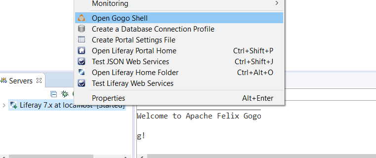
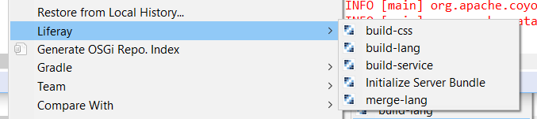

In Liferay Workspaces, Gradle is the build tool used to compile and publish Liferay modules. Before you can begin managing your Liferay module projects from a Liferay Workspace, you’ll need to create a Liferay Workspace, which is covered in the Creating a Liferay Workspace tutorial. Once you’ve created your Liferay Workspace, you can begin using it to manage Gradle-based OSGi modules for @product@.
In this tutorial, you’ll learn how to deploy modules to a Liferay server using Liferay Workspace. Also, you’ll explore several other ways to install, start, stop, inspect, and modify a Liferay server. You’ll examine two tools for working with a workspace: Blade CLI and Liferay IDE. Time to get started!
Deploying your projects to @product@ is one of the more popular Blade CLI commands that works with your Liferay server. Because Blade CLI is configured to deploy modules to a running Liferay instance, the deployment mechanism works similarly in a workspace compared to when it’s run standalone. You can learn more about deploying a module using Blade CLI in the Deploying to Liferay tutorial.
Besides the blade deploy command, there are several other miscellaneous commands that can also be useful during development. Make sure you’re in a Liferay Workspace and have a bundle installed and configured in the workspace before testing the Blade CLI commands on your own. To learn more about installing a Liferay server in a Liferay Workspace, see the Running a Liferay Instance From Your Workspace section.
The first thing that comes to mind when interacting with a server is simply turning it on/off. You can use the server sub-command to accomplish this. To turn on a Liferay server, you can run
blade server start -b
Likewise, to turn off a server, run
blade server stop
Once you’ve started your bundle, you can examine your server’s OSGi container by using the sh command, which provides access to your server using the Felix Gogo shell. For example, to check if you successfully deployed your application from the previous section, you could run:
blade sh lb
Your output lists a long list of modules that are active/installed in your server’s OSGi container.
Figure 1: Blade CLI accesses the Gogo shell script to run the lb command.
You can run any Gogo command using blade sh. See the Using the Felix Gogo Shell section for more information on this tool.
You can access a workspace’s Gradle wrapper automatically by using the gw command. Since the workspace’s Gradle wrapper resides in its root folder, it can sometimes be a hassle running it for a deeply nested module (e.g., ../../../../gradlew compileJava). Running Gradle wrapper from Blade CLI automatically detects the Gradle wrapper and can run it anywhere. For instance, if you’re in a deeply nested directory trying to compile a module, you can simply run:
blade gw compileJava
This example runs the compileJava command using the workspace’s include wrapper. Any Gradle command can be used with the gw Blade CLI command.
Awesome! You successfully deployed a project from Blade CLI and learned how to conveniently interact with @product@ using Blade CLI. Next, you’ll learn more about using a workspace from Liferay IDE.
Liferay IDE offers the functionality provided by Blade CLI in a GUI. Before you begin learning about managing your modules from Liferay IDE, you should make sure a Liferay server is configured in your Eclipse workspace. Although a server is not required to manage your module projects, it’s helpful for testing once you’ve finished developing them. You can learn how to create a Liferay bundle and link it to your workspace in the Using Liferay IDE to Create Your Workspace section.
Once you’ve created modules in your workspace and have linked the workspace to a Liferay bundle, you can deploy them using Liferay IDE. First, make sure your Liferay server is started by clicking the Start Server button (). Then navigate to your module project from the Project Explorer and drag-and-drop the project onto the configured Liferay bundle in the Servers menu. If at any time you’d like to stop your workspace’s Liferay server, click the Stop Server button (). Awesome! You’ve deployed a module to your running Liferay instance!
For the deployed module project, you can check if it has been deployed successfully by using Gogo Shell. Right-click the started portal in server view and select Open Gogo Shell.

Figure 2: Select Open Gogo Shell to open a terminal window in IDE using Gogo Shell.
A Gogo Shell terminal displays, allowing you to enter Gogo command to inspect your Liferay instance and the modules deployed to it. Enter the lb command to view a list of deployed modules. If the project status is active, then it already deployed successfully.
Figure 3: You can check to see if your module deployed successfully to Liferay using the Gogo Shell.
Since the Liferay Workspace perspective in IDE is Gradle-based, you have some additional Gradle features you can take advantage of. The Gradle Tasks toolbar presents Gradle commands for your workspace that you can execute with a click of the mouse.
Figure 4: The Gradle Task toolbar offers Gradle tasks and their descriptions, which can be executed by double-clicking them.
You can also access various Gradle build operations intended for Liferay module projects. Right-click your module project and select Liferay → Gradle and then the build command you’d like to execute.

Figure 4: The Gradle Task toolbar offers Gradle tasks and their descriptions, which can be executed by double-clicking them.
When updating Gradle files in your workspace (e.g., build.gradle), it’s important to keep your project up-to-date in the IDE. Therefore, when changing Gradle configurations or properties, always right-click your module project and select Gradle → Refresh Gradle Project.
Excellent! You’ve learned how to manage your Gradle-based Liferay Workspace using Liferay IDE.